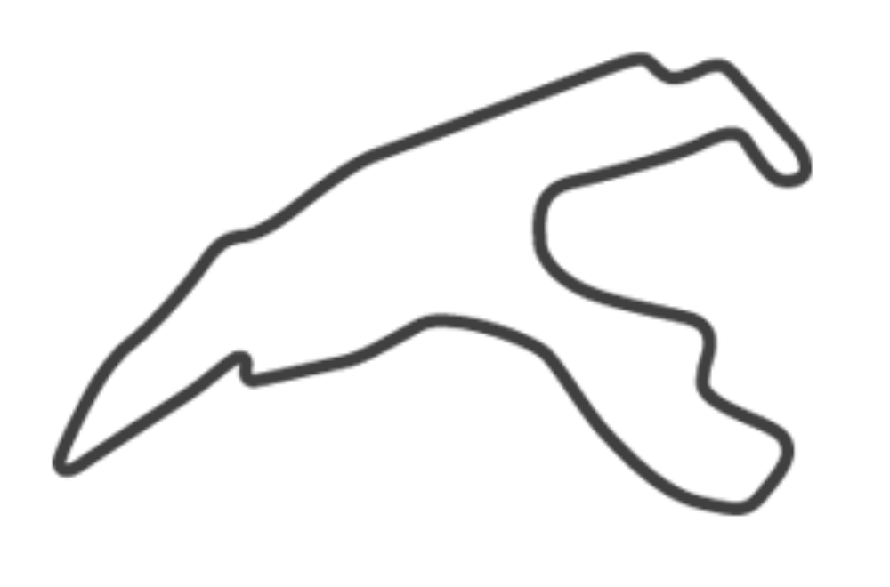
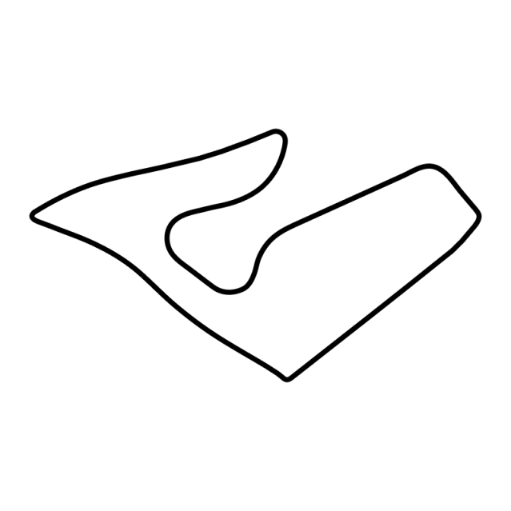
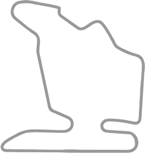

#5 Spa-Francorchamps

A "Belga Ardennek gyöngyszeme" Spa-Francorchamps a motorsport egyik legkedveltebb pályája. A pálya
hossza 7 kilométer feletti, és a magasságkülönbség is jelentős, ami változatossá és kihívásossá teszi a
versenyzést. A Eau Rouge kanyar a F1 legikonikusabb kanyarai közé tartozik, a Radillion pedig egy igazi
vezetői bravúrt kíván.
#4 Suzuka Circuit
A Suzuka Circuit az egyik legkedveltebb pálya a pilóták körében. A pálya a "Nyolcas alakú csodaként"
is ismert, és a kanyargós elrendezés, a gyors egyenesek és a ikonikus 130R kanyar igazi vezetési élményt
nyújtanak. A Suzuka Circuit ad otthont a Japán Nagydíjnak, és számos emlékezetes versenynek adott
otthont, mint Senna 1988-as domináns győzelme, vagy Schumacher 2000-es bajnoki címe.
#3 Red Bull Ring

A Red Bull Ring az egyik legújabb pálya a Formula-1-ben. A pálya Ausztriában található, és a festői
táj és a modern létesítmények igazi látványossággá teszik. A Red Bull Ring gyors kanyarokkal, hosszú
egyenesekkel és egy meredek emelkedővel rendelkezik, ami változatossá és kihívásossá teszi a
versenyzést.
#2 Monza
A "Templom a sebességnek" néven is ismert Monza az egyik legrégebbi és leggyorsabb pálya a
Formula-1-ben. A hosszú egyenesek, a drámai kanyarok és a szenvedélyes olasz rajongók felejthetetlen
versenynapokat varázsolnak. A pálya történelme során ikonikus győzelmeknek adott otthont, mint Juan
Manuel Fangio 1957-es diadala, vagy Michael Schumacher 2000-es mesterhármasa.
#1 Hungaroring

A Hungaroring a Formula-1 egyik legtechnikásabb pályája. A szűk kanyarok, a lassú tempójú szakaszok
és a forró magyar nyár igazi kihívást jelentenek a versenyzőknek és a csapatoknak. A pálya 1986 óta ad
otthont a Magyar Nagydíjnak, és számos emlékezetes versenynek adott otthont, mint Schumacher 1991-es
első győzelme, vagy Hamilton 2016-os drámai győzelme az esőben.